HollowmoonA classic roguelike · free in your browser
Three hundred years ago the moon cracked. Now the Hollowing is spreading from its deepest shard, erasing names first, then shapes, then everything. Ninety days remain.
- Make a hero from a cast of original races and professions.
- Leave a frontier hamlet, cross the wilderness and descend into the Vaults.
- Turn-based, ASCII, permadeath, with the full keyboard command set veterans know.
Play Hollowmoon →
☾ Today's Daily →
No download, no sign-up. The Daily is one short descent a day, the same for everyone, and works on phones.